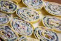
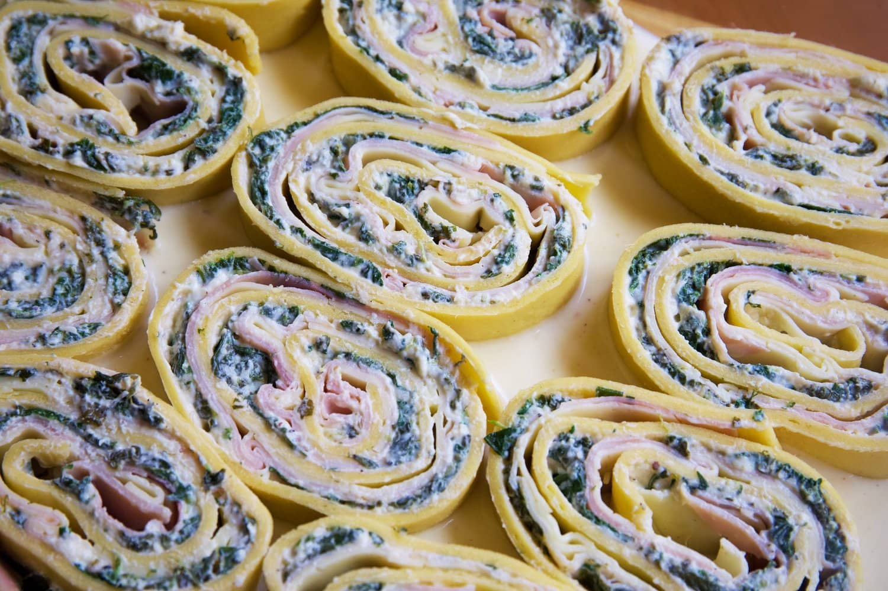

Capriccio di Faenza
DIFICULTAD
INGREDIENTES
TIEMPO
TIEMPO ACTIVO
CANTIDAD
INTERMEDIA
FÁCIL DISPONIBILIDAD
3 HORAS
2 HORAS Y 45 MINUTOS
5 RACIONES
Vídeo de la receta
Audio de la receta

Pasos para cocinar la receta
Preparar la masa:
Mezcla 150 g de harina de fuerza, 150 g de semolina y una pizca de sal.
Forma un volcán y añade 4 huevos en el centro.
Bate los huevos con un tenedor e incorpora la harina poco a poco.
Amasa durante 3-4 minutos, envuelve en papel film y deja reposar 30 minutos.
Salsa de tomate:
Sofríe 2 dientes de ajo laminados con aceite, peperoncino y tallos de albahaca a fuego medio.
Añade una cucharada de concentrado de tomate y sofríe 10 segundos. Agrega 800 g de tomates pelados
y una corteza de parmesano
.
Cocina a fuego medio-alto 10-15 minutos hasta espesar.
Corrige sal y acidez con miel.
Preparar el relleno:
Saltea 300 g de espinacas con albahaca, perejil y vino blanco. Deja escurrir.
Mezcla las espinacas con 250 g de ricotta, 50 g de parmesano, 1 huevo, sal y pimienta.
Bechamel:
Derrite mantequilla, añade harina y cocina un minuto.
Incorpora leche caliente poco a poco, removiendo. Sazona con sal, nuez moscada, parmesano y una yema.
Montaje:
Estira la masa hasta un círculo grande. Cocina 2 minutos en agua hirviendo con sal y enfría sobre un paño.
Extiende el relleno de ricotta y espinacas, cubre con jamón cocido y queso. Enrolla y corta en rodajas.
Hornear:
Coloca las rodajas en una fuente con bechamel en el fondo. Cubre con más bechamel, parmesano rallado y salsa de tomate.
Hornea a 180 °C por 20 minutos. Decora con albahaca y parmesano en polvo.